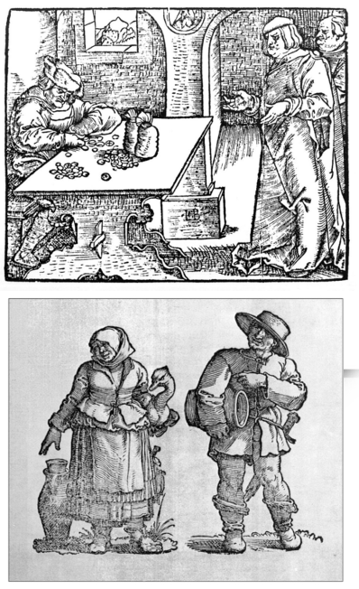

TRGOVCI
Srednjovjekovni trgovac je čovjek prašnih nogu – prisiljen putovati kako bi našao robu i kupce. Trgovci koji su sudjelovali u lokalnoj razmjeni nazivali su se po robi kojom su trgovali – solari, suknari, platnari ili pak kramari, ako su prodavali različitu robu na malo. U gradićima su trgovci prodavali robu u dućanima koji su se uglavnom sastojali od jedne prostorije s dvokrilnim vratima. Jedno je krilo služilo kao ulaz u dućan, a donja polovica drugog krila bila je zidić na kojem se izlagala roba.
U našim srednjovjekovnim gradovima trgovci su ekonomski najjača skupina. Nerijetko su podrijetlom bili stranci. Potkraj srednjega vijeka istaknuti trgovci približavaju se patricijskim obiteljima. Ne ograničavaju se na trgovinu, već se bave i novčarstvom, kupuju nekretnine i stvaraju velike zemljišne posjede pa čak i vlastite knjižnice.
U našim srednjovjekovnim gradovima trgovci su ekonomski najjača skupina. Nerijetko su podrijetlom bili stranci. Potkraj srednjega vijeka istaknuti trgovci približavaju se patricijskim obiteljima. Ne ograničavaju se na trgovinu, već se bave i novčarstvom, kupuju nekretnine i stvaraju velike zemljišne posjede pa čak i vlastite knjižnice.
